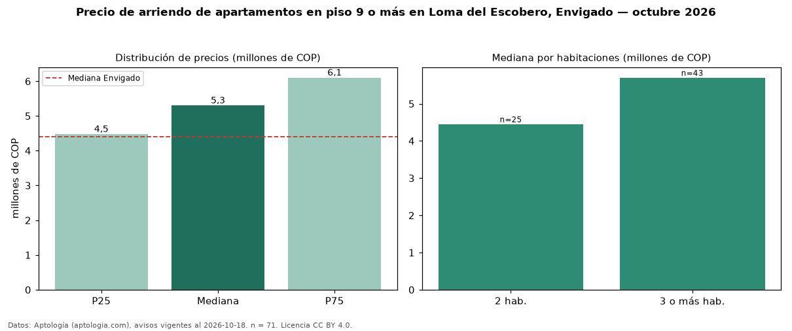

Precio de arriendo de apartamentos en piso 9 o más en Loma del Escobero, Envigado — octubre 2026
COP 5,30 millones al mes es el canon mediano de apartamentos en piso 9 o más en arriendo en Loma del Escobero, Envigado (n = 71 avisos). Eso es 15 % más que la mediana de todos los apartamentos en arriendo de Loma del Escobero (COP 4,60 millones, n = 349); este segmento reúne el 20 % de esos avisos. Por metro cuadrado, la mediana es COP 54.217/m² al mes (n = 71), 5 % por encima del conjunto de referencia (COP 51.813/m²). El área mediana anunciada es 98 m². El segmento con más oferta es el de 3 o más habitaciones (43 avisos, mediana COP 5,70 millones); pasar de 2 habitaciones a 3 o más habitaciones cambia la mediana +28 %. El estrato más frecuente es 5 (90 % de los avisos con estrato). La mediana de todos los apartamentos en arriendo de Envigado es COP 4,40 millones (+20 % de diferencia). La mitad central de los avisos va de COP 4,47 millones a COP 6,10 millones (razón 1,4), una dispersión baja. Datos: Aptología (aptologia.com), CC BY 4.0 — https://www.aptologia.com/arriendo/envigado/loma-del-escobero. Archivos: PDF, CSV con las cifras y gráfica PNG.

| Avisos únicos | 71 |
|---|---|
| Percentil 25 | COP 4.475.000 |
| Mediana | COP 5.300.000 |
| Percentil 75 | COP 6.100.000 |
| Mediana por m² | COP 54.216 |
Fuente: avisos vigentes de portales inmobiliarios recopilados por Aptología, deduplicados (mínimo 30 avisos únicos por celda). Precios pedidos, no cerrados. Fecha: 2026-10-18.